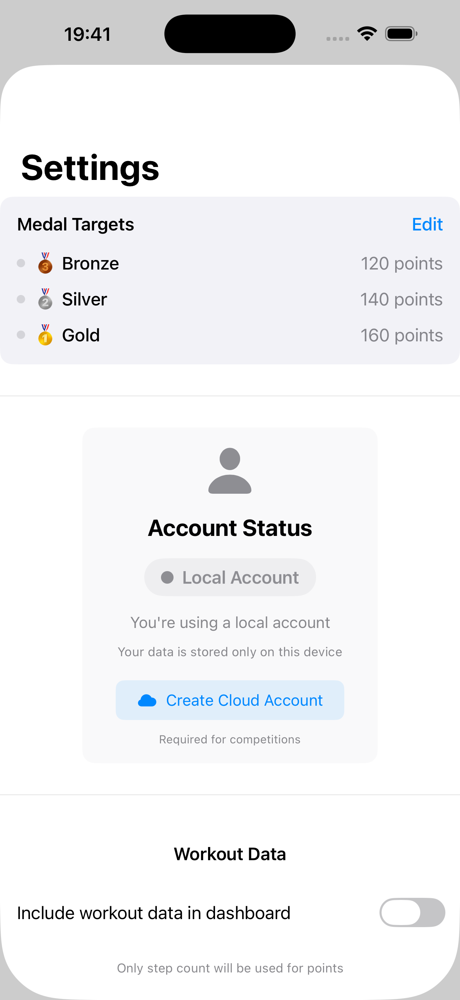

Getting Started
- On installing the app, grant Apple Health access 
- Set your medal targets
- Set apple watch on/off and set your age to track workouts (in Settings)
- Optional: Create a cloud account to join leagues
- View your progress in the app
How Points Work
Daily Steps:
- 7k steps = 3 points
- 10k steps = 5 points
- 12.5k+ steps = 8 points
Workouts (30+ minutes):
Points based on heart rate intensity relative to your age, see Advanced notes below.
Default targets: 120 points (bronze), 140 (silver), 160 (gold) - fully customizable
Advanced Notes
Workout Points Calculation
For workouts with at least 30 minutes duration, points are awarded based on average heart rate:
- 5 points: Average heart rate ≥ (220 - user age) × 0.6
- 8 points: Average heart rate ≥ (220 - user age) × 0.7
Examples:
For age 49:
- Max HR: 171 bpm (220 - 49)
- 5 points: 103+ bpm (60% of 171)
- 8 points: 120+ bpm (70% of 171)
For age 20:
- Max HR: 200 bpm (220 - 20)
- 5 points: 120+ bpm
- 8 points: 140+ bpm
User age can be set in Settings.